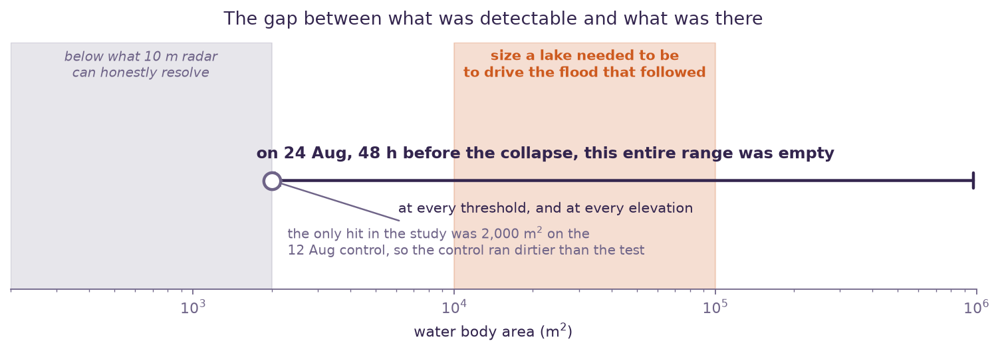
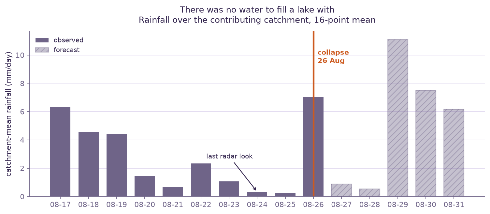
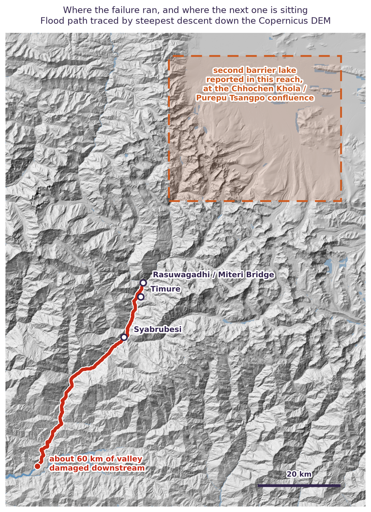

Was the Nepal barrier lake visible from orbit before it burst?
On 26 August 2026 a rock and ice avalanche dammed the Lhende Khola on the Nepal–Tibet border. The lake behind the debris burst and the surge ran 60 km down the Bhote Koshi through Timure and Syabrubesi. We went looking for that lake in the last satellite images taken before it broke.
The questionCould anyone have seen it coming?
A barrier lake is the one part of this cascade that sits still long enough to be photographed. If it was there on the last pass, free radar saw it and nobody looked. If it was not, the warning case is for a different instrument entirely.

The answerNothing was there

Three instruments, measuring three unrelated things, all say the same. That matters because they fail in unrelated ways: cloud shadow and radar shadow have nothing to do with each other.
| Instrument | What it measures | What it found on 24 Aug | Verdict |
|---|---|---|---|
| Sentinel-1 C-band radar, 10 m |
Backscatter. Smooth water reflects away from the sensor and goes dark | 0 clusters. Excess over control never clears the −5 dB speckle floor | No lake |
| Sentinel-2 optical, 10–20 m |
Reflected sunlight. Liquid water is dark in near infrared and shortwave | 0 pixels below 0.10 in both bands. The 6.9% flagged as water is shadow at 0.116 / 0.117 | No lake |
| Open-Meteo precipitation |
Whether enough water was arriving to build a lake at all | 0.3–2.3 mm/day across 20–25 Aug | No water to fill one |
The evidenceThree ways of finding nothing



Why it mattersThe null is the useful part
- It rules out a class of warning system. Nobody needs to build orbital monitoring for this hazard at this cadence, because the failure window is shorter than the revisit. That is worth knowing before money is spent on it.
- It points at the instrument that would have worked. The collapse registered 5.2 on local seismometers. Seismic detection gives an exact origin time and minutes of downstream warning. It is free, it already fired, and it is where the effort belongs.
- It constrains the timeline. The blockage formed inside 48 hours, which narrows what anyone reconstructing this event needs to explain.
- It is checkable. Every threshold, date and figure here can be reproduced from free archives with no login.
LiveWhat we are doing now
A second lake formed upstream near the Chhochen Khola and Purepu Tsangpo confluence. China's Ministry of Water Resources put it at about 2 million cubic metres on 27 August and forecast 3 million more over three days, with a high risk of breach. That figure rests on a single source, so we are measuring it independently.

A lake surface is flat, so its shoreline is an equipotential: intersect a radar outline with an elevation model and the shoreline elevation is the water level. Integrate below it for volume. Two passes give a filling rate, which makes the lake its own flow gauge, and the river gauges that would normally do that job were destroyed in the flood.
Two checks before trusting any of it. Running one fixed footprint through three independent elevation models from three different epochs returns volumes within 3 to 4 percent, so the elevation model is not the weak link, which is not what we expected. The weak link is the water outline and the surface estimate. And for 3 million cubic metres to arrive on rainfall alone needs a catchment of roughly 270 to 480 km2, which is plausible for these two catchments with melt on top. The Chinese figure is consistent with the weather.
What none of it produces is a breach time. The debris dam is in no elevation model we have, so there is no freeboard, and freeboard sets the clock. We can say how much water is behind it and how fast that is changing. We cannot say when it goes, and nor can anyone else working from orbit.
CorrectionsThree things we got wrong first time
- An elevation cap that excluded the leading hypothesis. Capping detections at 5,000 m ruled out a supraglacial source by construction, before testing it. Removed, then tested.
- A doubling that was an artifact of counting. We reported the largest source-zone cluster going from 411,000 to 919,000 m2. That was separate patches merging across a threshold into one label. Total area, the number that means something, moved 12.37 to 12.67 km2. Two percent.
- Assuming optical was blind. We justified a radar-only study on monsoon cloud without checking. Sentinel-2 was 75.6% clear over the source zone on 24 August. We reached for the instrument that had worked before instead of asking what the question needed, and it took someone else asking why we were using only one satellite to catch it. For a company whose whole offer is independent verification, that should not have needed pointing out.
Why we publish negative results
Because the alternative is selling things that do not work. We ran this the day after the event expecting either a quiet confirmation or a striking image of a lake nobody had noticed, and got neither. A method you can check is worth more than a result you cannot.
Data, all free and none of it needing a login: Copernicus Sentinel-1 RTC and Sentinel-2 L2A via Microsoft Planetary Computer; Copernicus DEM GLO-30, NASADEM and ALOS World 3D-30m for the elevation spread; Open-Meteo for precipitation. Half-hourly GPM IMERG would have been the better rainfall source, but the Planetary Computer copy ends in May 2021. ICESat-2 has no usable recent track over this catchment. SWOT does cover it, on a pass pattern that should put a look somewhere around 30 August, and it measures water surface elevation directly, which is the number our shoreline method can only approximate.
Method: descending orbit 19, Sentinel-1D, VV gamma0 at 10 m. Baseline is the median of 25 Jun, 7 Jul, 19 Jul and 31 Jul; control 12 Aug; test 24 Aug. Detection AOI 85.30 to 85.70 E, 28.20 to 28.60 N. New water is VV at or below −15 dB and at least 3 dB under baseline, on slopes under 8 degrees, in clusters of at least 2,000 m2. Same-track baselines throughout, because comparing an ascending scene against a descending one in this terrain compares two shadow maps rather than two days. Wind roughening raises the backscatter of open water and can hide a small lake. In a confined gorge an early impoundment may be 20 to 50 m wide, which is two to five pixels, below what we would claim to see. Piping failure gives no surface warning at all. Detecting water is not assessing stability: seeing a lake tells you an impoundment exists, never when it will go. The pipeline is a few hundred lines of Python and we will send it to anyone who wants to check the numbers.